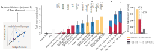

How do we understand the computations in the brain? One way is through building hypothesis models that encode specific computational mechanisms, and evaluate how well their stimulus-response patterns align with those of real neural circuits.
Task-driven approaches have recently proven effective for modeling brain function. For example, image classification as an objective yields deep networks whose representations closely match activity in the ventral visual stream.
In a multitask setting, the brain may contain distinct “processing pathways” for different tasks. A model that excels at task A likely shares representations with the neural pathway specialized for A.
Moreover, a neuron may support multiple tasks (A&B), requiring alignment with models optimized for multitask computation.
In our work, we first find brain-aligned models, and characterize the tasks supported by their representations, thereby inferring the visual system’s functional objectives.
Brain-Task Relevance

To understand what drives brain alignment, we decode the top layers of DNNs to identify which cognitive tasks their representations support. We use a diverse set of tasks—static, dynamic, and hybrid—annotated in blue, red, and yellow, respectively, to pinpoint the role of dynamic processing.
We then correlate task performance with brain alignment: stronger correlations suggest that the corresponding task is more closely tied to the brain's underlying functional objective.
Hybrid tasks generally show higher relevance to brain alignment. Notably, the combination of purely static object recognition and purely dynamic motion recognition yields the highest alignment—and together, they explain away the explanatory power of all other tasks.

Are these two computations fundamental to the brain?
Indeed, brain alignment increases as both object and motion capacities improve (upper-left). Moreover, dimensionality reduction on voxel-wise task relevances (upper-right) reveals a 2D eigenspace that explains 97% of the variance, with two principal axes emerging: object form and motion dynamics.
We see several regions actually conduct hybrid computations, with voxels spreading between the two axes.
Further analysis at the region and stream levels (bottom) shows that they account for most of the variance across regions and explain every visual stream. Again, it also highlights the highly hybrid and distributed nature of computations within individual streams.